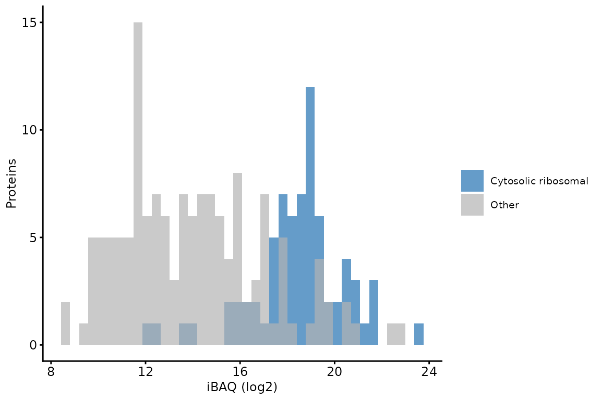

Absolute quantification with iBAQ, and its limits
Tom Smith
2026-09-11
Source:vignettes/absolute_quantification_iBAQ.Rmd
absolute_quantification_iBAQ.RmdEvery other vignette in this package compares one protein against itself across samples. That comparison is safe because whatever makes a protein easy or hard to detect — how well its peptides ionise, how many it yields, how they chromatograph — is the same in every sample, so it cancels.
Comparing different proteins within one sample does not have that protection, and it is a question people reasonably want to ask: is this protein abundant here, or rare? Is my bait present at similar levels to the thing it pulled down?
iBAQ is the standard attempt at an answer (Schwanhäusser et al. 2011). It corrects the most obvious of the confounders: a long protein yields more tryptic peptides than a short one, so it accumulates more total signal at equal molar abundance. Dividing the summed intensity by the number of peptides the protein could have produced removes that term.
This vignette shows how to compute it, and then how to check whether it worked — because on the data below the correction turns out to remove very little, and the reasons for that are worth understanding before quoting an iBAQ number to anyone.
The data
lfq_dda_ibaq_PeptideGroups.txt.gz is the Proteome
Discoverer peptide-level output for the LFQ-DDA experiment used in the
LFQ-DDA QC vignette
— a wild type human cell line against a point mutant, three replicates
each — subset differently. Alongside a random sample of proteins it
retains every cytosolic ribosomal protein that was
identified, because the check in the second half of this vignette needs
a set of proteins whose relative molar abundance is known in advance,
and a random few hundred proteins of a proteome contain almost none of
any complex.
lfq_dda_ibaq_proteome.fasta.gz holds the sequences of
those proteins, needed for the in silico digest below.
pep_inf <- system.file("extdata", "lfq_dda_ibaq_PeptideGroups.txt.gz",
package = "biomasslmb")
fasta_inf <- system.file("extdata", "lfq_dda_ibaq_proteome.fasta.gz",
package = "biomasslmb")Label-free is the right input for iBAQ. MS1 peak area is a physical measure of how much peptide eluted, and each peptide contributes one number per run. Summed TMT reporter intensity is not equivalent: PSMs are summed, so a peptide sequenced ten times contributes ten rows, and how often a peptide is selected for fragmentation is an artefact of the acquisition method rather than a property of the protein. iBAQ on TMT data carries that distortion on top of everything discussed below.
infdf <- read.delim(gzfile(pep_inf))
abundance_cols_ix <- grep('^Abundance', colnames(infdf))
exp_design <- data.frame(
Condition = rep(c('WT', 'Mutant'), each = 3),
Replicate = rep(1:3, times = 2))
exp_design$Sample <- paste(exp_design$Condition, exp_design$Replicate, sep = '_')
exp_design$quantCols <- exp_design$Sample
colnames(infdf)[abundance_cols_ix] <- exp_design$Sample
qf <- readQFeatures(assayData = infdf,
quantCols = abundance_cols_ix,
colData = exp_design,
name = 'peptides_raw')
#> Checking arguments.
#> Loading data as a 'SummarizedExperiment' object.
#> Formatting sample annotations (colData).
#> Formatting data as a 'QFeatures' object.
qf <- sync_coldata(qf, 'peptides_raw')Filtering
The filtering is the LFQ-DDA sequence from the LFQ-DDA QC and
summarisation vignette with one deliberate difference:
unique_master = TRUE and proteotypic = TRUE,
which together keep only the peptides that were resolved to a single
protein group and whose sequence occurs in just one protein. A peptide
shared between two proteins would otherwise contribute its full
intensity to whichever one the search engine assigned it to, inflating
that protein’s total by signal that did not come from it. For relative
quantification that error is roughly constant across samples and largely
cancels; for an absolute estimate it does not. See peptides are not proteins for
how often this arises.
The accession list needs one adjustment before it can match. The
contaminant FASTA prefixes every entry with Cont_, and
whether that prefix survives into the search output depends on how the
database was built, so the list below holds both forms. Matching on only
one of them removes nothing and reports no error — contaminants and protein FDR
shows what that silent failure looks like.
contaminant_accessions <- get_contaminant_fasta_accessions(system.file(
"extdata", "0602_Universal_Contaminants.fasta.gz", package = "biomasslmb"))
# Match both the prefixed and unprefixed form of every accession
contaminant_accessions <- c(contaminant_accessions,
sub('^Cont_', '', contaminant_accessions))
qf[['peptides']] <- filter_features_pd_dda(
qf[['peptides_raw']],
contaminant_proteins = contaminant_accessions,
filter_contaminant = TRUE,
filter_associated_contaminant = TRUE,
unique_master = TRUE,
proteotypic = TRUE,
remove_no_quant = TRUE)
# pNA is the most missingness a peptide may carry: at most 4 of the 6 samples
qf[['peptides_filtered']] <- filterNA(qf[['peptides']], 4/6)
# A single peptide gives a protein total with nothing to check it against
qf[['peptides_filtered']] <- filter_features_per_protein(
qf[['peptides_filtered']], min_features = 2)
c(raw = nrow(qf[['peptides_raw']]),
filtered = nrow(qf[['peptides']]),
retained = nrow(qf[['peptides_filtered']]))
#> raw filtered retained
#> 3287 2030 1855The numerator: total signal, summed
iBAQ’s numerator is the total MS1 signal attributed to a
protein, so the summarisation has to be a sum, on the linear scale. This
is a real departure from the rest of the package, where
robustSummary is preferred: robustSummary
estimates a representative log-scale value per protein, which is what
you want for comparing across samples and is not what you want here. A
ratio of total signal to peptide count only means anything if the
numerator really is a total.
For the same reason, na.rm = TRUE is correct here even
though it would be wrong for relative quantification. A peptide that was
not detected contributed no signal, and that is literally what the
instrument recorded. The cost is that a protein whose peptides were
mostly missed is systematically underestimated — worth remembering when
the answer looks low.
qf <- aggregateFeatures(qf,
i = 'peptides_filtered',
fcol = 'Master.Protein.Accessions',
name = 'summed',
fun = base::colSums,
na.rm = TRUE)
nrow(qf[['summed']])
#> [1] 216The denominator: peptides the protein could have produced
cleaver digests the sequences in silico. Two choices
matter and neither has a single right answer.
Missed cleavages. Counting them would inflate the denominator with peptides that mostly are not observed. Zero missed cleavages is the conventional choice and the one used here.
The observable length window. Peptides shorter than about 6 residues are not distinguishable and longer than about 30 are rarely identified, so counting them would overstate how much of the protein was ever available to be measured. The exact bounds are a judgement call; 6–30 is conventional. An alternative is to take the window from the peptide lengths actually observed in your own data, which adapts to the instrument method at the cost of making the denominator dataset-dependent.
proteome <- Biostrings::readAAStringSet(fasta_inf)
fasta_headers <- names(proteome)
names(proteome) <- gsub("(sp|tr)\\|(\\S*)\\|.*", "\\2", fasta_headers)
digest <- cleaver::cleave(proteome, enzym = 'trypsin',
missedCleavages = 0, unique = FALSE)
n_observable <- sapply(digest, function(peptides) {
widths <- Biostrings::width(peptides)
sum(widths >= 6 & widths <= 30)
})
summary(n_observable)
#> Min. 1st Qu. Median Mean 3rd Qu. Max.
#> 1.00 14.00 24.00 33.48 39.50 472.00
protein <- qf[['summed']]
protein <- protein[rownames(protein) %in% names(n_observable), ]
n_peptides <- n_observable[rownames(protein)]
protein <- protein[n_peptides > 0, ]
n_peptides <- n_peptides[n_peptides > 0]
qf[['ibaq']] <- protein
assay(qf[['ibaq']]) <- sweep(assay(protein), 1, n_peptides, '/')
nrow(qf[['ibaq']])
#> [1] 216What the correction changes
summed <- log2(assay(qf[['summed']])[rownames(protein), 'WT_1'])
ibaq <- log2(assay(qf[['ibaq']])[, 'WT_1'])
finite <- is.finite(summed) & is.finite(ibaq)
c(spearman = round(cor(summed[finite], ibaq[finite], method = 'spearman'), 3),
median_rank_change = median(abs(rank(-summed[finite]) - rank(-ibaq[finite]))),
proteins = sum(finite))
#> spearman median_rank_change proteins
#> 0.941 13.000 213.000The two orderings are highly correlated, but not identical: the median protein moves about 13 places in the abundance ranking. So the correction is doing something. Whether what it does is an improvement is a separate question, and the next section is how to ask it.
Checking it against something known
The cytosolic ribosome contains one copy of each of its ~80 protein subunits. Whatever their sequences and lengths, they are present in the cell at the same molar abundance. If iBAQ is recovering molar abundance, they should come out at the same value; if it is not, the spread among them is a direct measure of how far off it is.
This is the most useful thing in this vignette, because it requires no external reference and can be run on any whole-proteome dataset that contains ribosomal proteins.
ribosomal_accessions <- gsub("(sp|tr)\\|(\\S*)\\|.*", "\\2", fasta_headers)[
grepl(paste0("(Small|Large) ribosomal subunit protein [eu][LS][0-9]",
"|^(40S|60S) ribosomal protein"),
sub("^\\S+\\s+", "", fasta_headers)) &
!grepl("mitochondrial", fasta_headers)]
is_ribosomal <- rownames(protein) %in% ribosomal_accessions
sum(is_ribosomal & finite)
#> [1] 72
ribo <- is_ribosomal & finite
data.frame(
measure = c('sd of log2 summed intensity', 'sd of log2 iBAQ',
'interquartile range of iBAQ (fold)'),
value = c(round(sd(summed[ribo]), 2),
round(sd(ibaq[ribo]), 2),
round(2^IQR(ibaq[ribo]), 1)))
#> measure value
#> 1 sd of log2 summed intensity 1.92
#> 2 sd of log2 iBAQ 2.05
#> 3 interquartile range of iBAQ (fold) 3.20The correction does not tighten them. It very slightly widens them, and the interquartile range stays around three-fold across a set of proteins that are present in a strict 1:1 ratio.
The reason is visible in how little of the variation the denominator can explain in the first place:
c(fewest_peptides = min(n_peptides[ribo]),
most_peptides = max(n_peptides[ribo]),
correlation = round(cor(summed[ribo], log2(n_peptides[ribo])), 3),
variance_explained_percent = round(
100 * cor(summed[ribo], log2(n_peptides[ribo]))^2, 1))
#> fewest_peptides most_peptides
#> 3.000 30.000
#> correlation variance_explained_percent
#> -0.028 0.100These are not proteins of a similar size. The denominator ranges over roughly 10-fold across the set, so iBAQ is applying a large and very unequal adjustment to proteins that are present in equal numbers. It still explains essentially none of the spread in summed intensity. The problem is not that there was too little length variation for the correction to act on; it is that within this set length is not what the signal tracks. What is left over is the variation iBAQ does not address: how readily each peptide ionises, how well it chromatographs, whether it was selected for fragmentation.
data.frame(ibaq = ibaq[finite],
set = ifelse(is_ribosomal[finite], 'Cytosolic ribosomal', 'Other')) %>%
ggplot(aes(ibaq, fill = set)) +
geom_histogram(bins = 40, position = 'identity', alpha = 0.7) +
scale_fill_manual(values = c(get_cat_palette(1), 'grey70'),
breaks = c('Cytosolic ribosomal', 'Other'), name = '') +
theme_biomasslmb(base_size = 9, aspect_square = FALSE) +
labs(x = 'iBAQ (log2)', y = 'Proteins')
iBAQ across all proteins, with the ribosomal proteins marked. They occupy a narrow band of the full range, but a wide one in absolute terms.
How to read that
Two explanations fit this result and the data cannot separate them.
The first is that iBAQ is simply not buying much. Protein abundance in a cell spans some fifteen doublings, while protein length spans three or four, so the term iBAQ corrects is small next to the term it does not — and peptide-level ionisation efficiency varies over orders of magnitude between peptides of the same protein, let alone between proteins.
The second is that the check itself is imperfect. Ribosomal proteins are equimolar in the ribosome, but a cell also contains free subunits awaiting assembly, and they turn over at different rates. Some of the three-fold spread may be real biology rather than measurement error, in which case iBAQ is doing better than this makes it look.
Either way the practical conclusion is the same, and it is the one worth taking away: on this data, an iBAQ difference of less than several-fold between two proteins is not evidence of anything. The ribosomal band above is narrow relative to the fifteen-doubling range of the proteome — which is exactly the resolution iBAQ has. It supports statements of the form “this protein is among the most abundant in the sample” or “this one is two orders of magnitude rarer than that one”. It does not support “protein A is present at 1.8 times protein B”.
Run the same check on your own data before relying on an iBAQ number. If your ribosomal proteins come out tighter than these, you have more resolution than this vignette does.
iBAQ is not copy number
A related point, because the two are often conflated. iBAQ is an intensity divided by a count; its units are arbitrary and comparable only within one sample. Converting it to molecules per cell requires anchoring the scale to something measured independently — a spike-in standard of known amount, or a total protein mass per cell combined with an assumption that the quantified proteome accounts for essentially all of it. Without that anchor, a large iBAQ value means “abundant in this sample” and nothing more absolute than that.
Summary
- iBAQ divides a protein’s total signal by the number of tryptic peptides it could yield, to make different proteins in one sample roughly comparable. It is the only measure in this package that attempts that.
- The numerator must be a sum on the linear scale,
not
robustSummary, and shared peptides should be excluded so that signal is not attributed to a protein it did not come from. - The denominator comes from an in silico digest with
cleaver. Zero missed cleavages and a 6–30 residue window are the conventional choices; both are judgement calls that change the answer. - Check it before trusting it. Cytosolic ribosomal proteins are equimolar and cost nothing to use as an internal standard. Here they spread over roughly three-fold, and the correction does not narrow them.
- Treat iBAQ as an order-of-magnitude statement about a sample, not a ratio between two proteins, and not a copy number.
Getting help
If your experiment does not fit what this article assumes, or a result looks wrong, please get in touch with Tom Smith (tsmith@mrclmb.ac.uk) rather than guessing — it is far easier to help while an analysis is in progress than to unpick a decision afterwards, and easier still before the samples are run. Getting started sets out which article applies to which experiment.
sessionInfo()
#> R version 4.5.3 (2026-03-11)
#> Platform: x86_64-pc-linux-gnu
#> Running under: Ubuntu 24.04.5 LTS
#>
#> Matrix products: default
#> BLAS: /usr/lib/x86_64-linux-gnu/openblas-pthread/libblas.so.3
#> LAPACK: /usr/lib/x86_64-linux-gnu/openblas-pthread/libopenblasp-r0.3.26.so; LAPACK version 3.12.0
#>
#> locale:
#> [1] LC_CTYPE=C.UTF-8 LC_NUMERIC=C LC_TIME=C.UTF-8
#> [4] LC_COLLATE=C.UTF-8 LC_MONETARY=C.UTF-8 LC_MESSAGES=C.UTF-8
#> [7] LC_PAPER=C.UTF-8 LC_NAME=C LC_ADDRESS=C
#> [10] LC_TELEPHONE=C LC_MEASUREMENT=C.UTF-8 LC_IDENTIFICATION=C
#>
#> time zone: UTC
#> tzcode source: system (glibc)
#>
#> attached base packages:
#> [1] stats4 stats graphics grDevices utils datasets methods
#> [8] base
#>
#> other attached packages:
#> [1] dplyr_1.2.1 tidyr_1.3.2
#> [3] ggplot2_4.0.3 biomasslmb_0.1.0
#> [5] QFeatures_1.20.0 MultiAssayExperiment_1.36.2
#> [7] SummarizedExperiment_1.40.0 Biobase_2.70.0
#> [9] GenomicRanges_1.62.1 Seqinfo_1.0.0
#> [11] IRanges_2.44.0 S4Vectors_0.48.1
#> [13] BiocGenerics_0.56.0 generics_0.1.4
#> [15] MatrixGenerics_1.22.0 matrixStats_1.5.0
#>
#> loaded via a namespace (and not attached):
#> [1] tidyselect_1.2.1 farver_2.1.2 blob_1.3.0
#> [4] Biostrings_2.78.0 S7_0.2.2 fastmap_1.2.0
#> [7] lazyeval_0.2.3 XML_3.99-0.24 digest_0.6.39
#> [10] lifecycle_1.0.5 cluster_2.1.8.2 ProtGenerics_1.42.0
#> [13] survival_3.8-6 KEGGREST_1.50.0 RSQLite_3.53.3
#> [16] magrittr_2.0.5 genefilter_1.92.0 compiler_4.5.3
#> [19] rlang_1.3.0 sass_0.4.10 tools_4.5.3
#> [22] igraph_2.3.3 yaml_2.3.12 corrplot_0.95
#> [25] knitr_1.52 labeling_0.4.3 S4Arrays_1.10.1
#> [28] htmlwidgets_1.6.4 bit_4.6.0 DelayedArray_0.36.1
#> [31] plyr_1.8.9 RColorBrewer_1.1-3 abind_1.4-8
#> [34] withr_3.0.3 purrr_1.2.2 desc_1.4.3
#> [37] grid_4.5.3 xtable_1.8-8 scales_1.4.0
#> [40] MASS_7.3-65 cli_3.6.6 rmarkdown_2.32
#> [43] crayon_1.5.3 ragg_1.5.2 otel_0.2.0
#> [46] robustbase_0.99-7 httr_1.4.9 reshape2_1.4.5
#> [49] BiocBaseUtils_1.12.0 DBI_1.3.0 cachem_1.1.0
#> [52] stringr_1.6.0 splines_4.5.3 AnnotationDbi_1.72.0
#> [55] AnnotationFilter_1.34.0 XVector_0.50.0 vctrs_0.7.3
#> [58] Matrix_1.7-4 jsonlite_2.0.0 naniar_1.1.0
#> [61] visdat_0.6.0 bit64_4.8.6 clue_0.3-68
#> [64] systemfonts_1.3.2 jquerylib_0.1.4 annotate_1.88.0
#> [67] glue_1.8.1 cleaver_1.48.0 DEoptimR_1.2-1
#> [70] pkgdown_2.2.1 uniprotREST_1.0.0 stringi_1.8.9
#> [73] gtable_0.3.6 tibble_3.3.1 pillar_1.11.1
#> [76] htmltools_0.5.9 R6_2.6.1 textshaping_1.0.5
#> [79] evaluate_1.0.5 lattice_0.22-9 backports_1.5.1
#> [82] png_0.1-9 memoise_2.0.1 bslib_0.12.0
#> [85] Rcpp_1.1.2 checkmate_2.3.4 SparseArray_1.10.10
#> [88] xfun_0.60 MsCoreUtils_1.22.1 fs_2.1.0
#> [91] pkgconfig_2.0.3